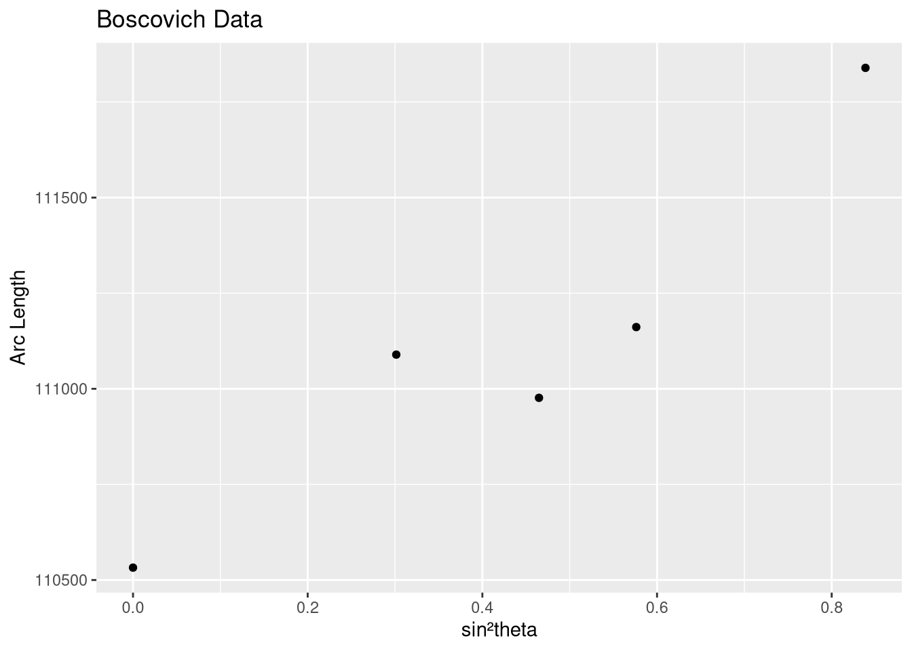

Code
library(readODS)
d1 = read_ods("geodata1.ods")
d2 = read_ods("geodata2.ods")Aman Das
August 29, 2023
In this article, we will try to estimate the length of the Earth’s Meridian.
In 1687, Isaac Newton claimed that the Earths rotation around its axis made it an Oblate Sphere. Rotation caused flattening at the Poles and bulging at the Equator.
If so, the distance (on earths surface) between two Latitude lines would be: \[ Y \approx C + m\sin^2\theta \]
Where \(\theta\) is the central meridian angle.
We may interpret \(Y\) to be a dependent variable on \(\sin^2\theta\) and estimte \(C\), and \(m\). Thus we can estimate the whole meridian length by summing over the latitude angles using regression.
We will make use of two historical data sets for this article.
We standardize X and set Y to sin2θ and meter.
radians = function(degree, minute = 0, second = 0){
ratiod = pi / 180
ratiom = ratiod / 60
ratios = ratiom / 60
res = degree * ratiod + minute * ratiom + second * ratios
return(res)
}
d1$lat = radians(d1$lat1, d1$lat2)
d1$X = (sin(d1$lat))^2
d1$Y = d1$arc * 6.39 * 0.3048
d2$lat = radians(d2$L1, d2$L2, d2$L3)
d2$arc = d2$S / d2$d
d2$X = (sin(d2$lat))^2
d2$Y = d2$arc * 12.78 * 0.3048Out dataset looks like this at this point:
# A tibble: 5 × 7
lat1 lat2 arc sin2 lat X Y
<dbl> <dbl> <dbl> <dbl> <dbl> <dbl> <dbl>
1 0 0 56751 0 0 0 110532.
2 33 18 57037 3014 0.581 0.301 111089.
3 42 59 56979 4648 0.750 0.465 110976.
4 49 23 57074 5762 0.862 0.576 111161.
5 66 19 57422 8386 1.16 0.839 111839.# A tibble: 4 × 9
S d L1 L2 L3 lat arc X Y
<dbl> <dbl> <dbl> <dbl> <dbl> <dbl> <dbl> <dbl> <dbl>
1 62473. 2.19 49 56 30 0.872 28538. 0.586 111165.
2 76546. 2.67 47 30 46 0.829 28683. 0.544 111730.
3 84425. 2.96 44 41 48 0.780 28489. 0.495 110976.
4 52749. 1.85 42 17 20 0.738 28472. 0.453 110909.
Estimate the coefficient of sin²θ and Intercept using Least Squares Estimate. And Predict Meridian Length.
Boscovich Data OLS estimate of Meridian Line length: 10008879French Data OLS estimate of Meridian Line length: 10001451Estimate the coefficient of sin²θ and Intercept using Least Absolute Deviation. Elemental Lines were used to compute LAD. Predict Meridian Length.
Elemental Lines are lines joining two data points in the Sample Space.
ad = function(Y, X, a, b){
l = length(Y)
cumudevn = 0
for (i in seq(l)) {
devn = abs( Y[i] - a - b * X[i] )
cumudevn = cumudevn + devn
}
return(cumudevn)
}
lad = function(Y, X){
l = length(Y)
labsdevn = sum( abs(Y - mean(Y)) )
coeff = c( mean(Y), 0)
for (i in seq(l-1)) {
for (j in seq(i+1, l)) {
b1 = (Y[j] - Y[i])/(X[j] - X[i])
b0 = (Y[i] - b1 * X[i])
absdevn = ad(Y, X, b0, b1)
if (labsdevn > absdevn) {
labsdevn = absdevn
coeff = c(b0, b1)
}
}
}
return(coeff)
}
ladmodel1 = lad(d1$Y, d1$X)
cat( "Boscovich Data LAD estimate of Meridian Line length:", estmerlen(ladmodel1) )Boscovich Data LAD estimate of Meridian Line length: 10018034French Data LAD estimate of Meridian Line length: 9990026Both OLS and LAD models predict the Meridian length to be close to ten million meters. Hence the meter as prescribed at the time, was close to the intended definition.